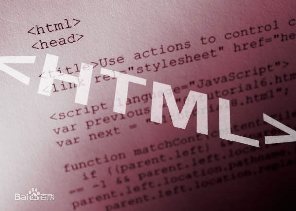

关于HTML+JavaScript+jquery介绍：
HTML：超文本标记语言，标准通用标记语言下的一个应用。“超文本”就是指页面内可以包含图片、链接，甚至音乐、程序等非文字元素。超文本标记语言的结构包括“头”部分（英语：Head）、和“主体”部分（英语：Body），其中“头”部提供关于网页的信息，“主体”部分提供网页的具体内容。
JavaScript：一种直译式脚本语言，是一种动态类型、弱类型、基于原型的语言，内置支持类型。它的解释器被称为JavaScript引擎，为浏览器的一部分，广泛用于客户端的脚本语言，最早是在HTML（标准通用标记语言下的一个应用）网页上使用，用来给HTML网页增加动态功能。
JQuery是继prototype之后又一个优秀的Javascript库。它是轻量级的js库 ，它兼容CSS3，还兼容各种浏览器（IE 6.0+, FF 1.5+, Safari 2.0+, Opera 9.0+），jQuery2.0及后续版本将不再支持IE6/7/8浏览器。jQuery使用户能更方便地处理HTML（标准通用标记语言下的一个应用）、events、实现动画效果，并且方便地为网站提供AJAX交互。jQuery还有一个比较大的优势是，它的文档说明很全，而且各种应用也说得很详细，同时还有许多成熟的插件可供选择。jQuery能够使用户的html页面保持代码和html内容分离，也就是说，不用再在html里面插入一堆js来调用命令了，只需要定义id即可。
- 